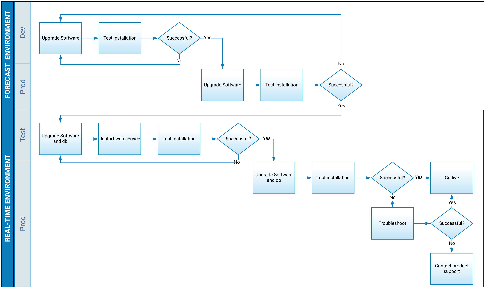

Software Upgrade by Environment Workflow
I worked a project that had a software application with two flavors—a forecast program and a real-time processing program. These two form factors shared a lot of code and resources since they essentially performed the same function except the forecast program processed historical data and the real-time program processed new, incoming data. Within these two programs, each had its own sub-environments. A need arose from technical teammates to understand how software upgrades would happen—where would they originate, what were the high-level steps, what to do if testing failed, etc. This workflow diagram accompanied a text description in a workflow document for the software.
